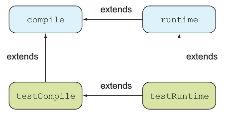

测试Java应用
一些开源的测试框架比如JUnit,TestNG能够帮助你编写可复用的结构化的测试，为了运行这些测试，你要先编译它们，就像编译源代码一样。测试代码的作用仅仅用于测试的情况，你可不想把你的测试代码发布到生产环境中，把源代码和测试代码混在一起可不是个好主意。通常你会把源代码和测试代码分开来，比如Gradle的标准项目布局src/main/java和src/test/java。
项目布局
在前面我们讲到默认的项目布局，源代码是src/main/java，资源文件是在src/main/resources,测试源代码路径也是这样，你把测试代码放在src/test/java，资源文件放在src/test/resources，编译之后测试的class文件在build/classes/test下。
所有的测试框架都会生成至少一个文件用来说明测试执行的结果，最普遍的格式就是XML格式，你可以在build/test-results路径下找到这些文件，XML文件的可读性比较差，许多测试框架都允许把测试结果转换成报告，比如JUnit可以生成HTML格式的报告，Gradle把测试报告放在build/reports/test。下图清晰的显示了项目的布局：
上面讲了这么多测试框架，Gradle怎么知道你想使用哪一个呢?你需要声明对外部库的依赖。
测试配置
Java插件引入了两个配置来声明测试代码的编译期和运行期依赖:testCompile和testRuntime，我们来看一下怎么声明一个对JUnit框架的编译期依赖：
dependencies {
testCompile 'junit:junit:4.11'
}
另外一个配置testRuntime用来声明那些编译期用不着但是在运行期需要的依赖，记住用于测试的依赖不会影响你源代码的classpath，换句话说他们不会用在编译或打包过程。然而，对于处理依赖来讲测试配置继承了源代码相关配置，比如testCompile继承了compile配置的依赖，testRuntime继承了runtime和testCompile和他们的父类，他们父类的依赖会自动传递到testCompile或testRuntime中。如下图所示：

测试任务
在之前的任务我们可能注意到任务图一直有四个任务是up-to-date的然后被跳过了，这是因为你没有编写任何测试代码Gradle就不需要编译或执行。下图显示了这四个任务在任务图中的位置：

从图中可以看到测试编译和测试执行阶段是在源代码被编译和打包之后的，如果你想避免执行测试阶段你可以在命令行执行gradle jar或者让你的任务依赖jar任务。
自动测试检查
对于build/classes/test目录下的所有编译的测试类，Gradle怎么知道要执行哪一个呢？答案就是所有匹配下面几条描述的都会被检查：
- 任何继承自junit.framework.TestCase 或groovy.util.GroovyTestCase的类
- 任何被@RunWith注解的子类
- 任何至少包含一个被@Test注解的类
如果没有找到符合条件的，测试就不会执行，接下来我们会使用不同框架来编写单元测试。